The Ames Housing Dataset contains information on residential property sales in Ames, Iowa, USA, covering the period from 2006 to 2010. The dataset is publicly available through Kaggle at:
The data consists of three files: train.csv, test.csv, and data_description.txt. The train.csv file includes the target variable SalePrice, while the test.csv file contains the same feature set without the target variable. The data_description.txt file provides detailed explanations of all variables and is included at the end of this notebook to help readers understand the dataset.
Train_ds contains 1460 rows (instances) and 80 columns (variables), including the target row ‘SalePrice’, while test_ds contains 1459 rows (instances) and 79 columns (not the target column ‘SalePrice’). Both datasets cover the same period of the years 2006-2010.
Some variables were not in the proper data types, for example, the categorical values in numerical data types. For simplicity, I changed float variables to integer variables. I found and imputed missing values.
Exploratory Data Analysis (EDA) is conducted to gain insight into the distributions and characteristics of the dataset prior to modeling. Visualization techniques play a key role in identifying skewness, sparsity, outliers, and potential data quality issues.
For this purpose, histograms are used to analyze numerical variables, and bar plots are used to examine categorical variables.
The following histograms summarize the distributions of the numerical features and highlight key patterns relevant for feature engineering and model selection.
Histograms
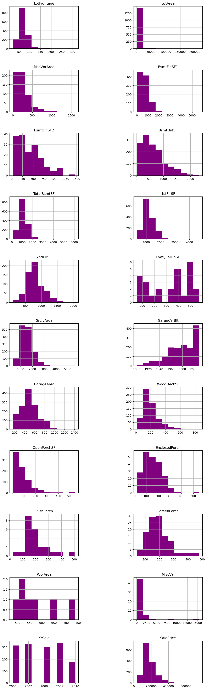
Barplots
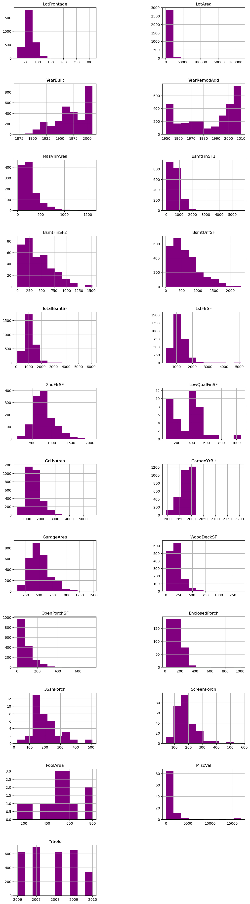
Average Sale Price and Total Amount of Sales for Every Year
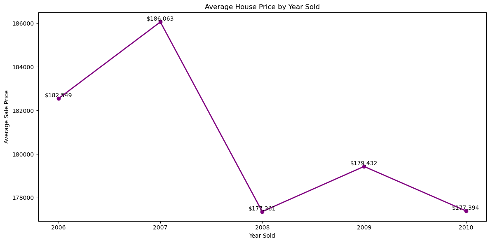
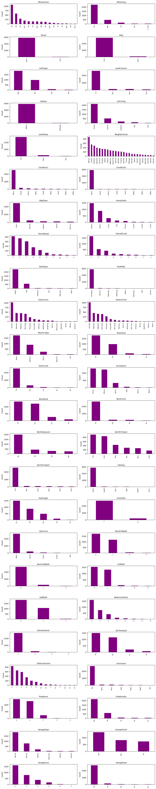
Average prices increased from 2006 to a peak in 2007, followed by a sharp decline in 2008. A partial recovery is observed in 2009, with prices decreasing again in 2010.
The total number of sales increases from 2006 to 2007, declines in 2008, and then reaches its highest level in 2009. A substantial drop in the number of sales is observed in 2010.
This noticeable volatility is timed closely with the global economic crisis of 2008.
Correlation of Variables with SalePrice
To explore the relationship between numerical features and the target variable SalePrice, scatterplots are used to visualize potential correlations. These plots allow the identification of linear or nonlinear trends between each numerical predictor and the sale price.
Positive or negative correlations may. be observed as diagonally. increasing or decreasing patterns in the scatter plots, while weak or no correlation is indicated by a more diffuse or random distribution of points.
Scatterplots:
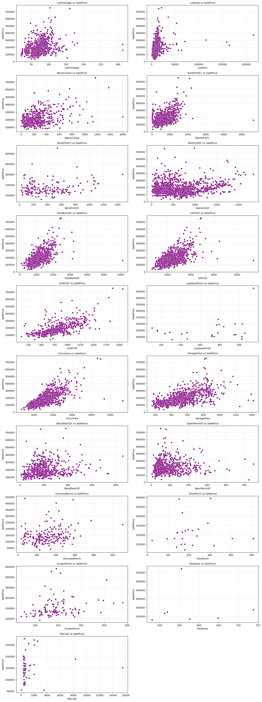
Variables ‘LotFrontage’, ‘BSmtFinSF1’, ‘TotalBsmtSF’, ‘1stFlrSF’, ‘2ndFlrSF’, ‘GrLivArea’, ‘GarageArea’ seem to have considerable correlation.
I am going to use median house prices in correlation with ‘year’ variables - ‘YearBuilt’, ‘YearRemodAdd’, ‘GarageYrBlt’ to reduce the influence of extreme values and outliers.
Median sales for ‘year’ variables:
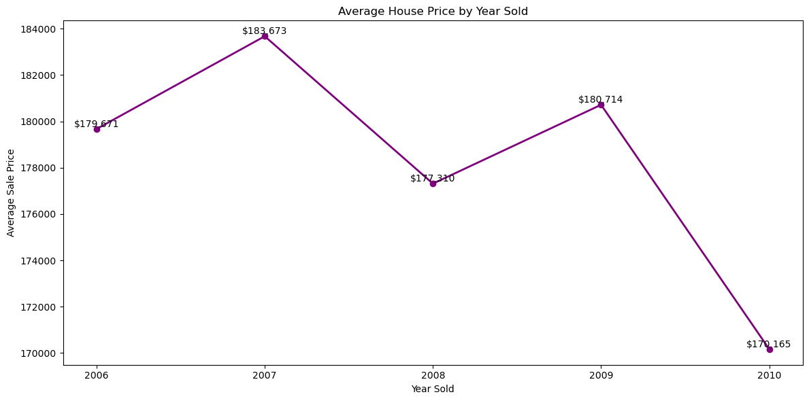
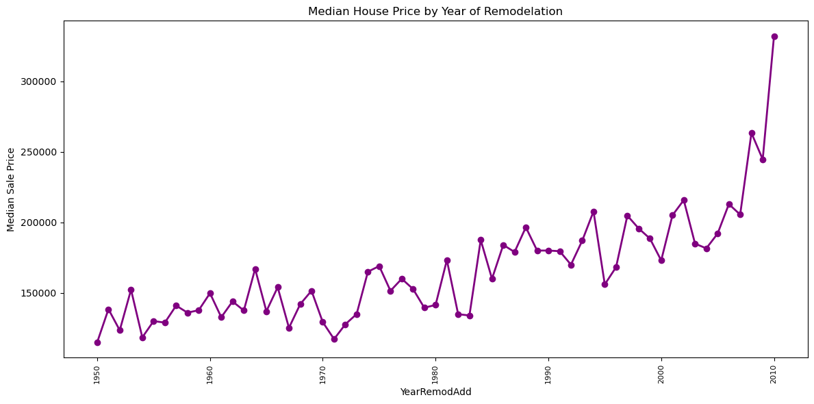
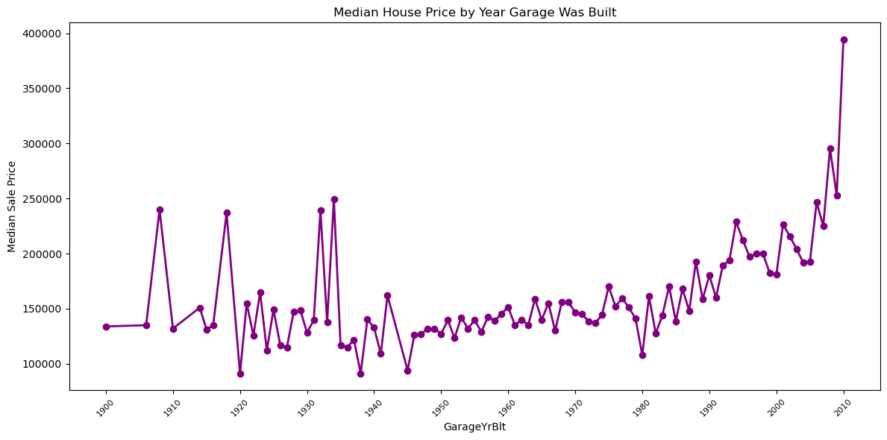
All ‘year’ variables showed a good correlation with SalePrice.
I used box plots to examine the relationship between categorical variables and the target variable ‘SalePrice’. Boxplots provide a concise summary of the distribution of sale prices within each category, allowing for comparison of medians, variability, and the presence of outliers across groups.
Boxplots:
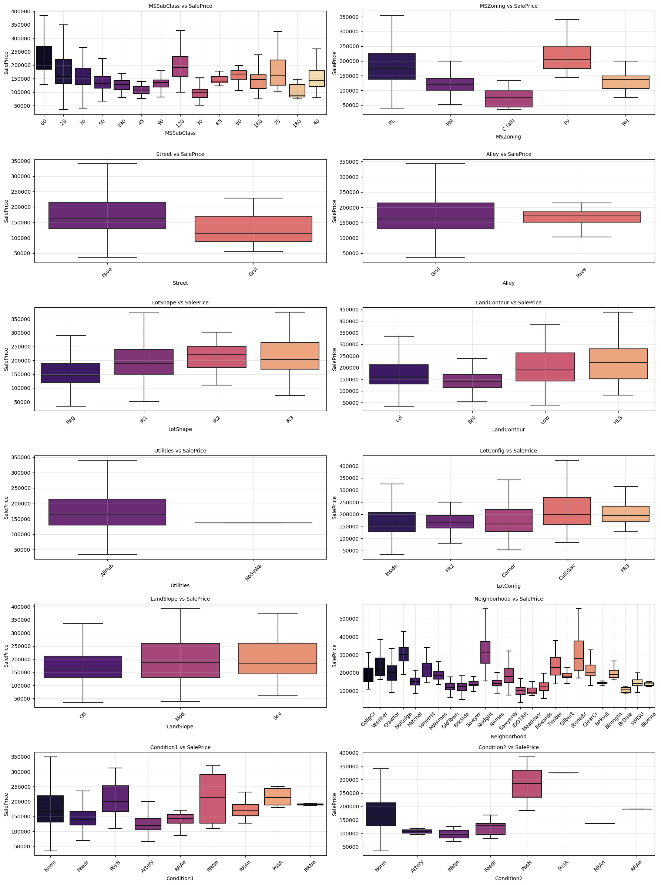
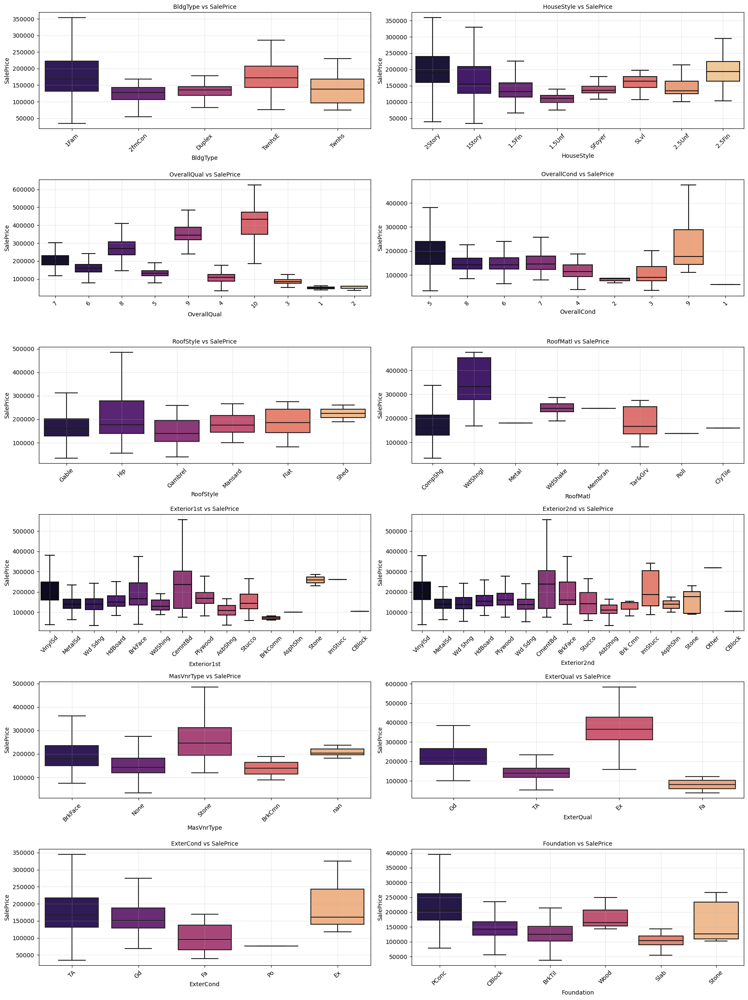
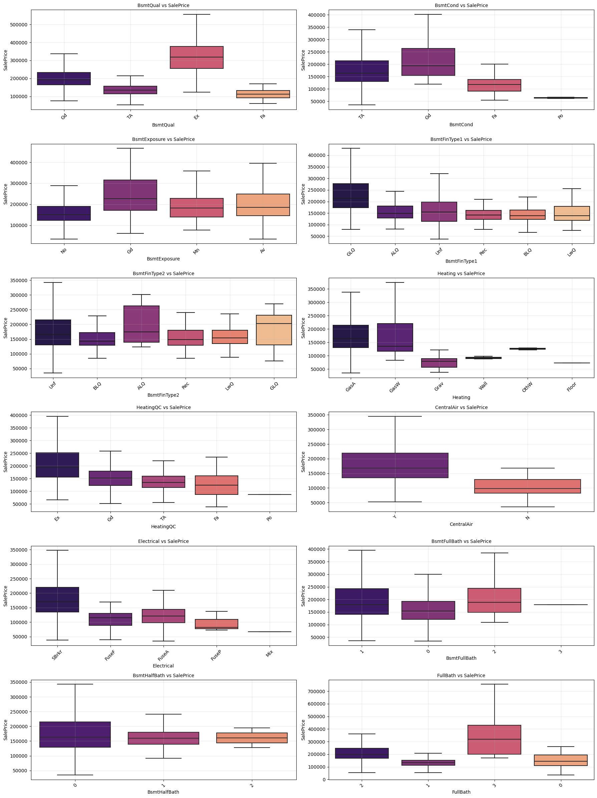
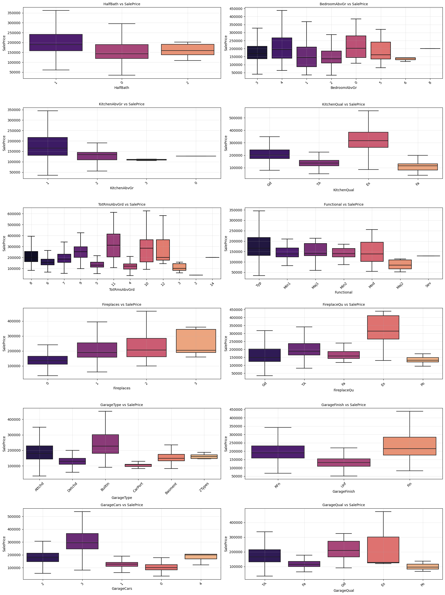
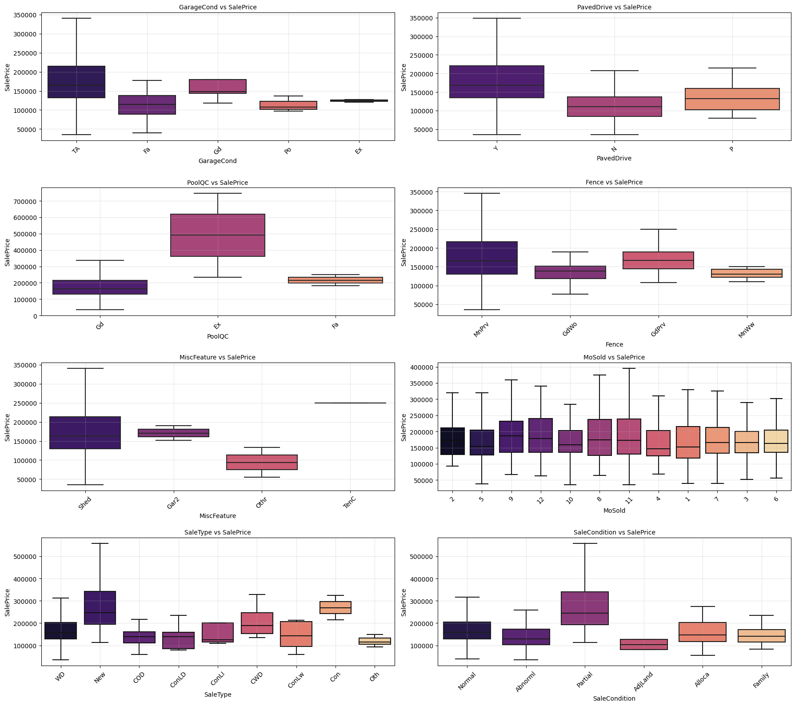
The box plots indicated that variables related to material quality, overall condition, number of rooms, number of fireplaces, and garage capacity are strongly associated with ‘SalePrice’.
Feature Selection
Features chosen by analysis of supposed low correlation in plots: ‘Alley’, ‘LotShape’, ‘LandContour’, ‘Utilities’, ‘LotConfig’, ‘LandSlope’, ‘Condition2’, ‘BldgType’, ‘HouseStyle’, ‘RoofStyle’, ‘BedroomAbvGr’, ‘KitchenAbvGr’, ‘BsmtFinType2’, ‘BsmtFinSF2’, ‘BsmtUnfSF’, ‘LowQualFinSF’, ‘Exterior1st’, ‘Exterior2nd’, ‘BsmtFullBath’, ‘BsmtHalfBath’,‘Electrical’, ‘Functional’, ‘WoodDeckSF’, ‘OpenPorchSF’, ‘EnclosedPorch’, ‘3SsnPorch’, ‘ScreenPorch’, ‘PoolArea’, ‘PoolQC’, ‘Fence’, ‘MiscVal’, ‘MoSold’. These features were tested by the model to prove their ability to lower the correction of the prediction model.
Why these features increase or decrease model accuracy?
Feature selection was performed iteratively, removing low-signal variables and validating each change using cross-validation. Features were retained only if their removal improved or maintained generalization performance. Features such as ‘Alley’, ‘Fence’, ‘MiscFeature’, and ‘MiscVal’ contain a high proportion of missing values, were found to be weak predictors. Similarly, features including ‘LotShape’, ‘LandContour’, ‘LotConfig’, ‘LandSlope’, and ‘Condition2’ seem to be rather irrelevant for prediction. Several structurally relevant variables, such as ‘BldgType’, ‘HouseStyle’, ‘BedroomAbvGr’, ‘KitchenAbvGr’, ‘Utilities’, ‘Functional’, ‘Exterior1st’, and ‘Exterior2nd’, also demonstrate limited contribution. Their predictive effect appears to be largely captured by stronger correlated variables such as ‘GrLivArea’, ‘TotRmsAbvGrd’, and ‘OverallQual’. ‘MoSold’ shows only a weak seasonal influence on pricing. In contrast, variables (‘BsmtFinType2’, ‘BsmtFinSF2’, ‘BsmtUnfSF’, ‘LowQualFinSF’, ‘BsmtFullBath’, ‘BsmtHalfBath’) provide meaningful information about usable living space and structural value. Outdoor and amenity features (‘WoodDeckSF’, ‘OpenPorchSF’, ‘EnclosedPorch’, ‘3SsnPorch’, ‘ScreenPorch’, ‘PoolArea’, ‘PoolQC’), although sparse, are associated with higher-end properties and contributed positively to predictive performance.
Ridge Model
I implemented a Ridge regression model using a fully pipeline-based preprocessing workflow, including log transformation of the target, imputation, scaling, one-hot encoding, skew correction, and custom feature engineering.
Ridge regression is the regular linear regression with a built-in “brake pedal.” When a model tries too hard to perfectly fit the training data, it can give some features very large weights. That often leads to overfitting — great performance on training data, worse performance on new data.
Ridge adds a penalty for large weights. It gently pushes all coefficients to be smaller, making the model more stable and less sensitive to noise.
I searched for the best value of alpha (the strength of regularization) using 5-fold cross-validation.
The data was split into 5 parts, and the model was trained and validated five times, each time using a different fold as validation. I tested 40 different alpha values ranging from 0.001 to 100, spaced logarithmically to explore both very small and large regularization strengths.
The model was evaluated using RMSE, and the alpha that produced the lowest average RMSE across folds was selected.
Values:
Best alpha: 0.001
Best CV RMSE: 0.12746354709463686
In a Jupyter environment, please rerun this cell to show the HTML representation or trust the notebook. On GitHub, the HTML representation is unable to render, please try loading this page with nbviewer.org.
ColumnTransformer(transformers=[('num',
Pipeline(steps=[('imputer',
SimpleImputer(strategy='median')),
('scaler', StandardScaler())]),
<sklearn.compose._column_transformer.make_column_selector object at 0x0000027F001F8D50>),
('cat',
Pipeline(steps=[('imputer',
SimpleImputer(strategy='most_frequent')),
('onehot',
OneHotEncoder(handle_unknown='ignore'))]),
<sklearn.compose._column_transformer.make_column_selector object at 0x0000027F77B37050>)])
<sklearn.compose._column_transformer.make_column_selector object at 0x0000027F001F8D50>
SimpleImputer(strategy='median')
StandardScaler()
<sklearn.compose._column_transformer.make_column_selector object at 0x0000027F77B37050>
SimpleImputer(strategy='most_frequent')
OneHotEncoder(handle_unknown='ignore')
Ridge(alpha=0.001)
The model is evaluated on the validation set using RMSE and R² to measure prediction accuracy and explanatory power. RMSE measures the average size of prediction errors. R² measures how much of the target variance the model explains.
The goal of this project was to predict house sale prices of the Ames Housing dataset, applying preprocessing, EDA, feature pruning, feature engineering, regularization, and cross-validation to build a stable and interpretable regression model.
Model Performance:
CV RMSE (log scale): 0.1256
Standard deviation: 0.0130
This indicates:
* Strong predictive accuracy for a linear model
* Stable performance across folds
* Good bias–variance balance
* No evidence of overfitting
The model performs near the expected ceiling for regularized linear regression on this dataset.
Conclusion:
Ridge regression benefits from controlled feature pruning. While weak categorical variables can increase noise after encoding, regularization stabilizes coefficient estimates in the presence of multicollinearity. The final Ridge model provides a robust, interpretable, and well-validated baseline for house price prediction. It demonstrates strong generalization performance and sound modeling practices.
End
Data Description
MSSubClass: Identifies the type of dwelling involved in the sale.
20 1-STORY 1946 & NEWER ALL STYLES
30 1-STORY 1945 & OLDER
40 1-STORY W/FINISHED ATTIC ALL AGES
45 1-1/2 STORY - UNFINISHED ALL AGES
50 1-1/2 STORY FINISHED ALL AGES
60 2-STORY 1946 & NEWER
70 2-STORY 1945 & OLDER
75 2-1/2 STORY ALL AGES
80 SPLIT OR MULTI-LEVEL
85 SPLIT FOYER
90 DUPLEX - ALL STYLES AND AGES
120 1-STORY PUD (Planned Unit Development) - 1946 & NEWER
150 1-1/2 STORY PUD - ALL AGES
160 2-STORY PUD - 1946 & NEWER
180 PUD - MULTILEVEL - INCL SPLIT LEV/FOYER
190 2 FAMILY CONVERSION - ALL STYLES AND AGES
MSZoning: Identifies the general zoning classification of the sale.
A Agriculture
C Commercial
FV Floating Village Residential
I Industrial
RH Residential High Density
RL Residential Low Density
RP Residential Low Density Park
RM Residential Medium Density
LotFrontage: Linear feet of street connected to property
Lvl Near Flat/Level
Bnk Banked - Quick and significant rise from street grade to building
HLS Hillside - Significant slope from side to side
Low Depression
Utilities: Type of utilities available
AllPub All public Utilities (E,G,W,& S)
NoSewr Electricity, Gas, and Water (Septic Tank)
NoSeWa Electricity and Gas Only
ELO Electricity only
LotConfig: Lot configuration
Inside Inside lot
Corner Corner lot
CulDSac Cul-de-sac
FR2 Frontage on 2 sides of property
FR3 Frontage on 3 sides of property
LandSlope: Slope of property
Gtl Gentle slope
Mod Moderate Slope
Sev Severe Slope
Neighborhood: Physical locations within Ames city limits
Blmngtn Bloomington Heights
Blueste Bluestem
BrDale Briardale
BrkSide Brookside
ClearCr Clear Creek
CollgCr College Creek
Crawfor Crawford
Edwards Edwards
Gilbert Gilbert
IDOTRR Iowa DOT and Rail Road
MeadowV Meadow Village
Mitchel Mitchell
Names North Ames
NoRidge Northridge
NPkVill Northpark Villa
NridgHt Northridge Heights
NWAmes Northwest Ames
OldTown Old Town
SWISU South & West of Iowa State University
Sawyer Sawyer
SawyerW Sawyer West
Somerst Somerset
StoneBr Stone Brook
Timber Timberland
Veenker Veenker
Condition1: Proximity to various conditions
Artery Adjacent to arterial street
Feedr Adjacent to feeder street
Norm Normal
RRNn Within 200' of North-South Railroad
RRAn Adjacent to North-South Railroad
PosN Near positive off-site feature--park, greenbelt, etc.
PosA Adjacent to postive off-site feature
RRNe Within 200' of East-West Railroad
RRAe Adjacent to East-West Railroad
Condition2: Proximity to various conditions (if more than one is present)
Artery Adjacent to arterial street
Feedr Adjacent to feeder street
Norm Normal
RRNn Within 200' of North-South Railroad
RRAn Adjacent to North-South Railroad
PosN Near positive off-site feature--park, greenbelt, etc.
PosA Adjacent to postive off-site feature
RRNe Within 200' of East-West Railroad
RRAe Adjacent to East-West Railroad
BldgType: Type of dwelling
1Fam Single-family Detached
2FmCon Two-family Conversion; originally built as one-family dwelling
Duplx Duplex
TwnhsE Townhouse End Unit
TwnhsI Townhouse Inside Unit
HouseStyle: Style of dwelling
1Story One story
1.5Fin One and one-half story: 2nd level finished
1.5Unf One and one-half story: 2nd level unfinished
2Story Two story
2.5Fin Two and one-half story: 2nd level finished
2.5Unf Two and one-half story: 2nd level unfinished
SFoyer Split Foyer
SLvl Split Level
OverallQual: Rates the overall material and finish of the house
10 Very Excellent
9 Excellent
8 Very Good
7 Good
6 Above Average
5 Average
4 Below Average
3 Fair
2 Poor
1 Very Poor
OverallCond: Rates the overall condition of the house
10 Very Excellent
9 Excellent
8 Very Good
7 Good
6 Above Average
5 Average
4 Below Average
3 Fair
2 Poor
1 Very Poor
YearBuilt: Original construction date
YearRemodAdd: Remodel date (same as construction date if no remodeling or additions)
RoofStyle: Type of roof
Flat Flat
Gable Gable
Gambrel Gabrel (Barn)
Hip Hip
Mansard Mansard
Shed Shed
RoofMatl: Roof material
ClyTile Clay or Tile
CompShg Standard (Composite) Shingle
Membran Membrane
Metal Metal
Roll Roll
Tar&Grv Gravel & Tar
WdShake Wood Shakes
WdShngl Wood Shingles
Exterior1st: Exterior covering on house
AsbShng Asbestos Shingles
AsphShn Asphalt Shingles
BrkComm Brick Common
BrkFace Brick Face
CBlock Cinder Block
CemntBd Cement Board
HdBoard Hard Board
ImStucc Imitation Stucco
MetalSd Metal Siding
Other Other
Plywood Plywood
PreCast PreCast
Stone Stone
Stucco Stucco
VinylSd Vinyl Siding
Wd Sdng Wood Siding
WdShing Wood Shingles
Exterior2nd: Exterior covering on house (if more than one material)
AsbShng Asbestos Shingles
AsphShn Asphalt Shingles
BrkComm Brick Common
BrkFace Brick Face
CBlock Cinder Block
CemntBd Cement Board
HdBoard Hard Board
ImStucc Imitation Stucco
MetalSd Metal Siding
Other Other
Plywood Plywood
PreCast PreCast
Stone Stone
Stucco Stucco
VinylSd Vinyl Siding
Wd Sdng Wood Siding
WdShing Wood Shingles
MasVnrType: Masonry veneer type
BrkCmn Brick Common
BrkFace Brick Face
CBlock Cinder Block
None None
Stone Stone
MasVnrArea: Masonry veneer area in square feet
ExterQual: Evaluates the quality of the material on the exterior
Ex Excellent
Gd Good
TA Average/Typical
Fa Fair
Po Poor
ExterCond: Evaluates the present condition of the material on the exterior
Ex Excellent
Gd Good
TA Average/Typical
Fa Fair
Po Poor
Foundation: Type of foundation
BrkTil Brick & Tile
CBlock Cinder Block
PConc Poured Contrete
Slab Slab
Stone Stone
Wood Wood
BsmtQual: Evaluates the height of the basement
Ex Excellent (100+ inches)
Gd Good (90-99 inches)
TA Typical (80-89 inches)
Fa Fair (70-79 inches)
Po Poor (<70 inches
NA No Basement
BsmtCond: Evaluates the general condition of the basement
Ex Excellent
Gd Good
TA Typical - slight dampness allowed
Fa Fair - dampness or some cracking or settling
Po Poor - Severe cracking, settling, or wetness
NA No Basement
BsmtExposure: Refers to walkout or garden level walls
Gd Good Exposure
Av Average Exposure (split levels or foyers typically score average or above)
Mn Mimimum Exposure
No No Exposure
NA No Basement
BsmtFinType1: Rating of basement finished area
GLQ Good Living Quarters
ALQ Average Living Quarters
BLQ Below Average Living Quarters
Rec Average Rec Room
LwQ Low Quality
Unf Unfinshed
NA No Basement
BsmtFinSF1: Type 1 finished square feet
BsmtFinType2: Rating of basement finished area (if multiple types)
GLQ Good Living Quarters
ALQ Average Living Quarters
BLQ Below Average Living Quarters
Rec Average Rec Room
LwQ Low Quality
Unf Unfinshed
NA No Basement
BsmtFinSF2: Type 2 finished square feet
BsmtUnfSF: Unfinished square feet of basement area
TotalBsmtSF: Total square feet of basement area
Heating: Type of heating
Floor Floor Furnace
GasA Gas forced warm air furnace
GasW Gas hot water or steam heat
Grav Gravity furnace
OthW Hot water or steam heat other than gas
Wall Wall furnace
HeatingQC: Heating quality and condition
Ex Excellent
Gd Good
TA Average/Typical
Fa Fair
Po Poor
CentralAir: Central air conditioning
N No
Y Yes
Electrical: Electrical system
SBrkr Standard Circuit Breakers & Romex
FuseA Fuse Box over 60 AMP and all Romex wiring (Average)
FuseF 60 AMP Fuse Box and mostly Romex wiring (Fair)
FuseP 60 AMP Fuse Box and mostly knob & tube wiring (poor)
Mix Mixed
GrLivArea: Above grade (ground) living area square feet
BsmtFullBath: Basement full bathrooms
BsmtHalfBath: Basement half bathrooms
FullBath: Full bathrooms above grade
HalfBath: Half baths above grade
Bedroom: Bedrooms above grade (does NOT include basement bedrooms)
Kitchen: Kitchens above grade
KitchenQual: Kitchen quality
Ex Excellent
Gd Good
TA Typical/Average
Fa Fair
Po Poor
TotRmsAbvGrd: Total rooms above grade (does not include bathrooms)
Functional: Home functionality (Assume typical unless deductions are warranted)
Typ Typical Functionality
Min1 Minor Deductions 1
Min2 Minor Deductions 2
Mod Moderate Deductions
Maj1 Major Deductions 1
Maj2 Major Deductions 2
Sev Severely Damaged
Sal Salvage only
Fireplaces: Number of fireplaces
FireplaceQu: Fireplace quality
Ex Excellent - Exceptional Masonry Fireplace
Gd Good - Masonry Fireplace in main level
TA Average - Prefabricated Fireplace in main living area or Masonry Fireplace in basement
Fa Fair - Prefabricated Fireplace in basement
Po Poor - Ben Franklin Stove
NA No Fireplace
GarageType: Garage location
2Types More than one type of garage
Attchd Attached to home
Basment Basement Garage
BuiltIn Built-In (Garage part of house - typically has room above garage)
CarPort Car Port
Detchd Detached from home
NA No Garage
GarageYrBlt: Year garage was built
GarageFinish: Interior finish of the garage
Fin Finished
RFn Rough Finished
Unf Unfinished
NA No Garage
GarageCars: Size of garage in car capacity
GarageArea: Size of garage in square feet
GarageQual: Garage quality
Ex Excellent
Gd Good
TA Typical/Average
Fa Fair
Po Poor
NA No Garage
GarageCond: Garage condition
Ex Excellent
Gd Good
TA Typical/Average
Fa Fair
Po Poor
NA No Garage
PavedDrive: Paved driveway
Y Paved
P Partial Pavement
N Dirt/Gravel
WoodDeckSF: Wood deck area in square feet
OpenPorchSF: Open porch area in square feet
EnclosedPorch: Enclosed porch area in square feet
3SsnPorch: Three season porch area in square feet
ScreenPorch: Screen porch area in square feet
PoolArea: Pool area in square feet
PoolQC: Pool quality
Ex Excellent
Gd Good
TA Average/Typical
Fa Fair
NA No Pool
Fence: Fence quality
GdPrv Good Privacy
MnPrv Minimum Privacy
GdWo Good Wood
MnWw Minimum Wood/Wire
NA No Fence
MiscFeature: Miscellaneous feature not covered in other categories
Elev Elevator
Gar2 2nd Garage (if not described in garage section)
Othr Other
Shed Shed (over 100 SF)
TenC Tennis Court
NA None
MiscVal: $Value of miscellaneous feature
MoSold: Month Sold (MM)
YrSold: Year Sold (YYYY)
SaleType: Type of sale
WD Warranty Deed - Conventional
CWD Warranty Deed - Cash
VWD Warranty Deed - VA Loan
New Home just constructed and sold
COD Court Officer Deed/Estate
Con Contract 15% Down payment regular terms
ConLw Contract Low Down payment and low interest
ConLI Contract Low Interest
ConLD Contract Low Down
Oth Other
SaleCondition: Condition of sale
Normal Normal Sale
Abnorml Abnormal Sale - trade, foreclosure, short sale
AdjLand Adjoining Land Purchase
Alloca Allocation - two linked properties with separate deeds, typically condo with a garage unit
Family Sale between family members
Partial Home was not completed when last assessed (associated with New Homes)